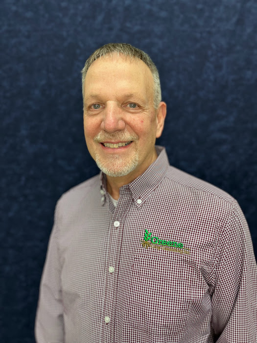
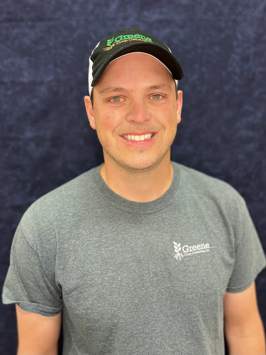
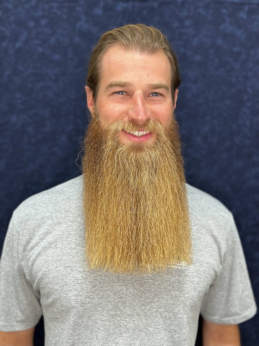
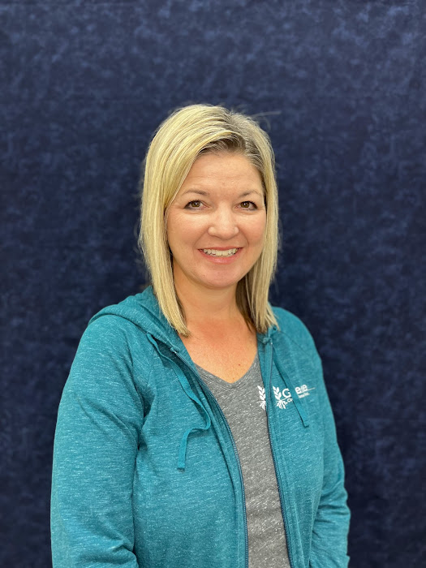

Learn more about our team and our mission
Greene Crop Consulting is dedicated to finding ways to help growers maximize their crop production and the profit production of their operation. We have been helping farmers develop more informed, cost-effective crop decisions since 2006. Let us show you how we can help your operation take full advantage of all the new technologies and sciences available.
Greene Crop Consulting is dedicated to providing the highest quality agricultural services for each customer. We practice integrity and innovation to ensure our services are economically and environmentally sound. Let us create a detailed plan for you and your acres today!

Danny founded Greene Crop Consulting in 2006. He has a Masters Degree in Agronomy from Purdue University. He also has experience as a Research Agronomist at Purdue where he focused on forage and crop performance. In addition, he worked as an Information Manager with Pioneer Hi-Bred International specializing in agronomy support.
Danny is a Certified Crop Advisor (CCA) and a licensed federal crop insurance agent. In 2014, Danny became a board member for the Indiana CCA and among the first in the state to obtain the '4R Nutrient Management Specialist' designation. He serves on the boards for the Indiana CCA, Amplify Consultant Network, and IN 4R Nutrient Stewardship Council.

Nathan joined Greene Crop Consulting in 2016 with a background in ag economics and farm finance. He helps growers manage risk through crop insurance planning and lending guidance, while also supporting agronomy services across the season.
He is a licensed drone pilot and provides aerial diagnostics, tile mapping, and field documentation to help clients make faster, better-informed decisions.

Tyler, a lifelong Franklin area resident with a farm background, joined Greene Crop Consulting in 2017 after more than five years in corn breeding research with AgReliant Genetics.
He has a Bachelor of Science in Agronomy from Purdue University and supports growers through agronomic troubleshooting, testing, interpretation, and in-season recommendations.

Amy has supported Greene Crop Consulting since its founding in 2006 and joined the team full-time in 2015. She coordinates office operations and keeps day-to-day client support running smoothly.
Amy is a registered nurse with a bachelor's degree from the University of Indianapolis and brings decades of care-focused experience to the Greene Crop team.
Contact us to schedule a consultation